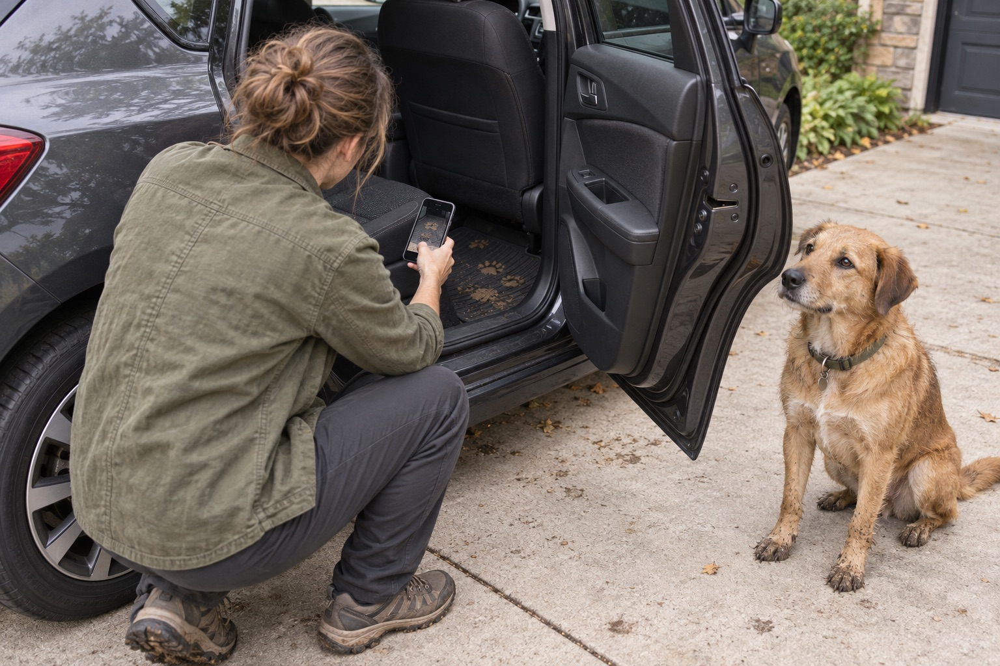
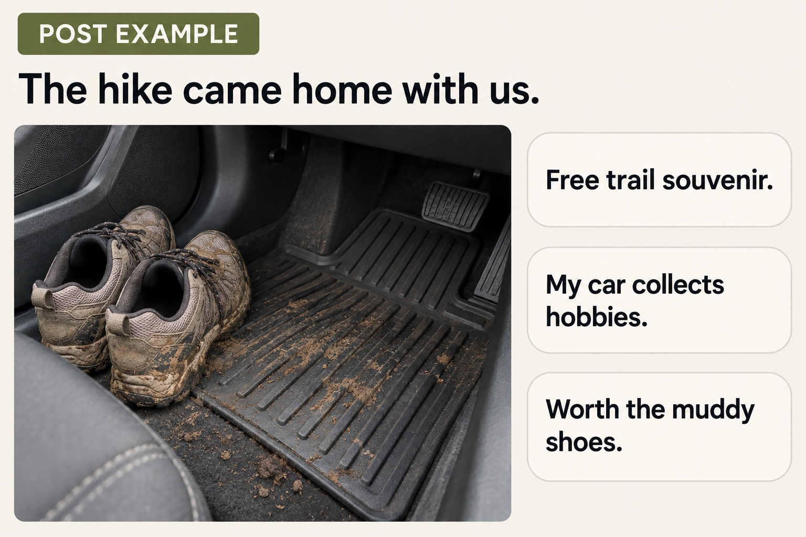
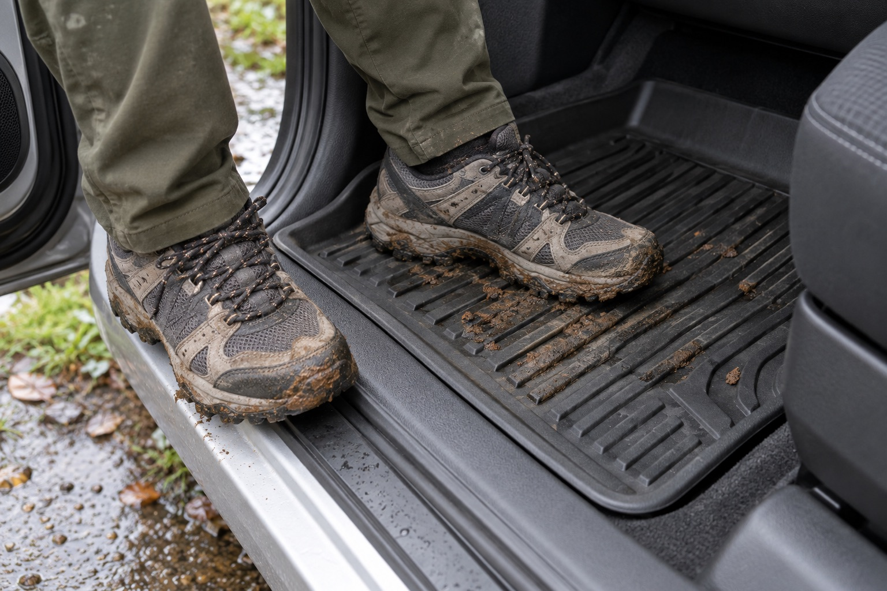
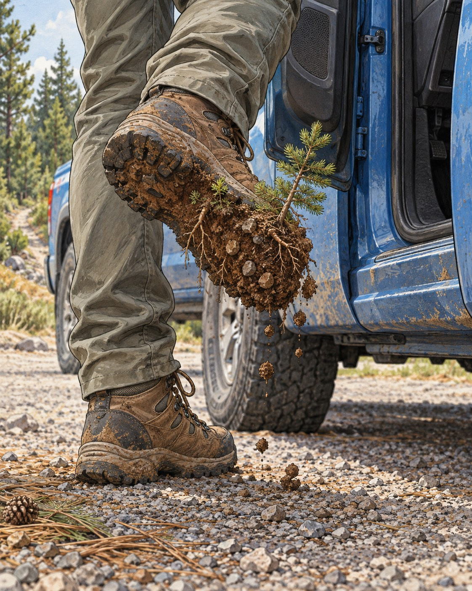
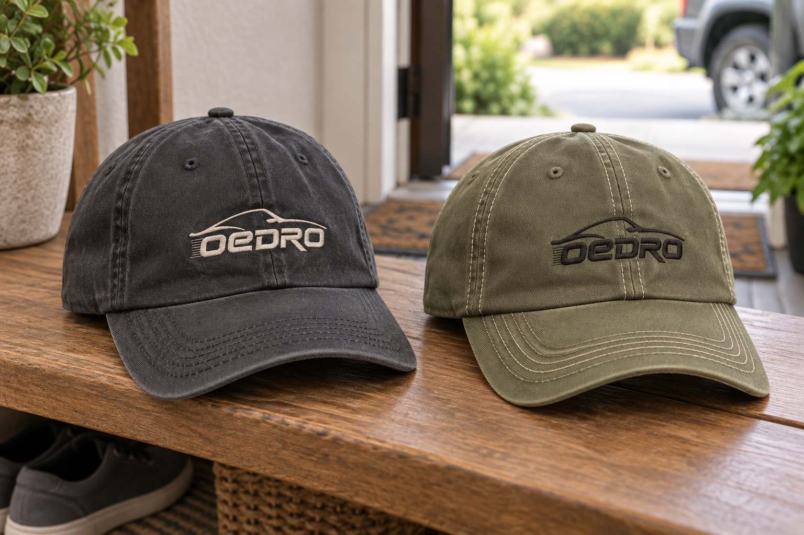
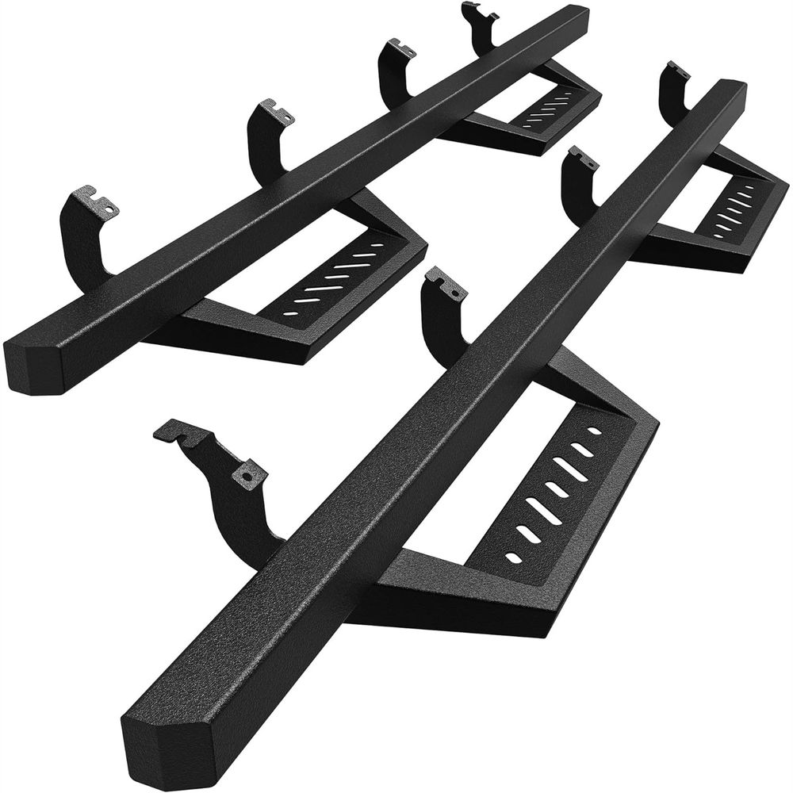
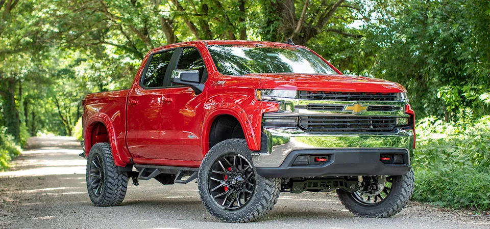
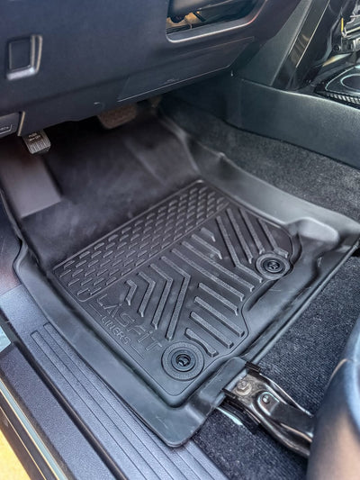
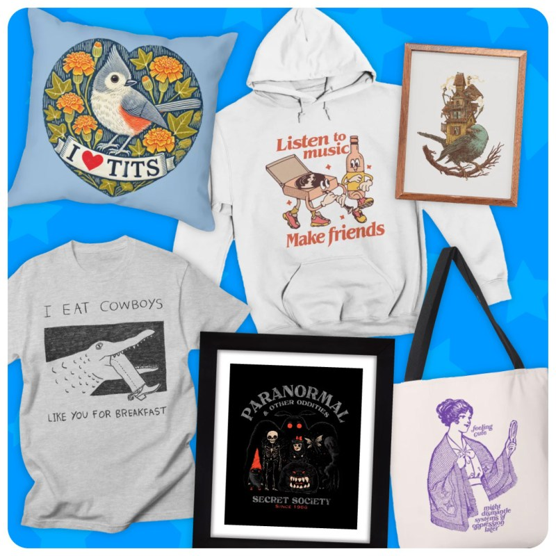

OEDRO 社媒品牌升级
期望是：用户平时愿意看，买过以后愿意留下，需要配件时记得 OEDRO。
方案要点
- 品牌关系目标：让用户在两次购买之间还愿意看到 OEDRO，不把涨粉或互动率当成唯一指标。
- 产品与购买信息：继续保留产品展示、安装说明和测评，满足用户搜索时的刚需。
- IG 和 FB：增加车主日常内容，不是每条都露产品，也不是每条都带购买链接。
当前基础与缺口
OEDRO 官网已有 UGC Gallery，说明创作者内容有一定素材基础，但不等于自然投稿已经形成，也不等于这些素材都拿到了可自由使用的授权。现有 IG、YouTube、Facebook 和独立 TikTok 工作，以及欢迎邮件、弃单邮件和创作者内容，都已存在。
用户装完一套脚垫或踏板，下一次需求可能隔很久，值得补上购后持续联系。近期内容结构与互动表现，公开数据无法确认；会上需补齐平台后台数据、复购基线与 Discord 实际参与情况，再判断缺口有多大。

继续保留
产品展示、安装说明、测评与明确购买入口。用户有需求时，需要足够的信息完成判断。
增加试验
日常车主内容、用户故事、真实改装、共创与购后联系。观察两次需求之间，用户是否愿意继续参与。
一条帖子与评论接话

帖子样稿 · 徒步带回来的泥
The hike came home with us.
这趟徒步，也跟着我们回家了。
模拟评论与回复
以下用于示范接话方式，不是真实用户留言。
- 评论示例
- Free trail souvenir.
- 品牌回复
- My car collects hobbies.
- 另一种接话
- Worth the muddy shoes.
“免费的山路纪念品”可以接“我的车负责收集爱好”，也可以说“这趟走得值，鞋脏点没关系”。顺着车主的笑点回应，有产品问题时再认真回答。
社媒与周边的日常联系
车主幽默、用车知识、产品信息和活动让品牌在社媒上被反复看到，周边则在居家和外出时真实用起来，让品牌反复出现。两条路都可能让人在以后有配件需求时想起品牌。
- 刷到内容
- 车主趣事、用车知识、产品信息、活动 经常看到，逐渐熟悉
- 用到周边
- 家里的冰箱贴、出门戴的帽子、随身钥匙扣 日常使用，反复想起

帽子出门戴，冰箱贴留在家里的冰箱上夹便条，钥匙扣每天带在身上。重点是用起来、经常看见。获得方式可以是购买、赠送或参加活动，投票共创只是其中一种形式。
平台按任务分工
- 以视觉车主生活和互动为主，适合日常内容的第一落点。
- 除了复用 IG 内容，也测试讨论型内容，看用户是否愿意在评论区聊用车问题。
- YouTube
- 继续做搜索向的安装、实测和长期使用内容，建立信任；需与视频团队配合。
- TikTok
- 由现有团队继续负责商业化，双方共享可复用素材和用户问题；本次不另建 TikTok 生产线。
- X
- 七天内容试跑：每四小时筛选汽车话题，制作英文短帖或回复草稿，由人工发布。产品内容核对官网；优先采用车主共同痛点与日常趣事。
- Reddit / 论坛
- 以观察和透明回应为主，不主动发起营销帖。
- Email / Discord
- 邀请用户讨论用车问题、分享安装经历。邮件使用现有模板。
五种内容，让用户有不同理由停留
日常共鸣 · 泥鞋上车

“车刚洗完，朋友说：就走这一小段土路。”用泥鞋、狗毛和零食碎屑发起聊天，用户讲一句就能参与。
车主生活 · 周末同行

让乘客、宠物和车主的周末计划进入画面。已有的户外乘客插画可以做话题起点；真实出游照片则向愿意分享的车主约稿。
使用判断 · 看清细节

围绕固定点、边缘与清洁位置做近拍教程。上图是商品参考；磨损与长期表现必须另拍真实记录，不能据此下结论。
参与选择 · 选一顶帽子

同一画面给出两款可生产方向，问“哪顶你会真的戴出门？”选择结果用于评估打样，同时询问颜色与佩戴场景。
购买信息 · 带着车型来找

围绕一款踏板写清车型、年款和驾驶室版本，带用户到官网核对适配。用户已经在选产品时，准确的购买信息比继续抛话题更有用。
查看产品知识库 ↗同行已经怎么做
Rough Country · 按整车找改装

Customer Builds 提供车型筛选、车主改装展示和相关配件入口。OEDRO 可以借鉴“车型＋使用场景”的整理方式，让用户找到与自己相近的车。
查看 Customer Builds ↗LASFIT · 使用画面连到产品

图库按车型收纳内容，照片旁可查看关联产品。参考价值是让真实安装位置与商品信息相互解释；图库本身不能证明所有内容都是自然投稿。
查看 Community Gallery ↗Threadless · 用户参与设计选择

官方获选作品落在衣物、包袋和家居用品上。用户评分帮助品牌选稿，不能直接等同于生产承诺。周边共创可以借鉴主题征集、选择与实物展示之间的衔接。
查看官方获选作品 ↗三条分发示例
泥鞋趣事 · 一张图发起聊天
IG：发图配“刚洗完车就走土路”的短句。FB：沿用画面，问车主怎么处理鞋底泥。X：提炼成一句车主能懂的笑点。评论出现具体清洁问题时，再补有依据的建议。
长期使用记录 · 有真实材料才制作
官方从安装开始记录，或邀请有真实使用记录的车主自愿分享。拍清使用条件、固定点、常踩位置与清洁前后；有多久的证据就写多久，当前不预设“半年”。
YouTube：发布完整过程与限制。IG / FB：剪出能独立看懂的细节片段，保留原始记录中的时间与条件。上图用于确定拍摄对象，不是长期测试结果。
帽子选择 · 图片与领取意愿一起问
IG：看图选款。FB / 邮件：同步两款设计，补问愿意在哪些场景佩戴。X：发图帖关联文字投票；投票与图片分开，匿名票不能作为领奖名单。
得票更高的款进入样品评估，生产数量还要结合实际领取意愿与成本。